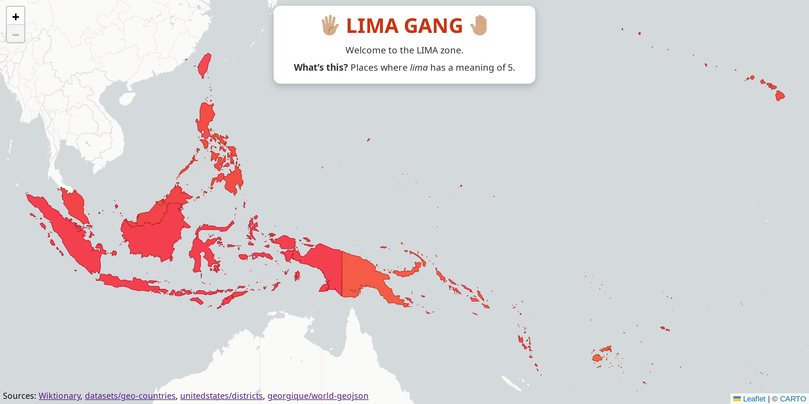
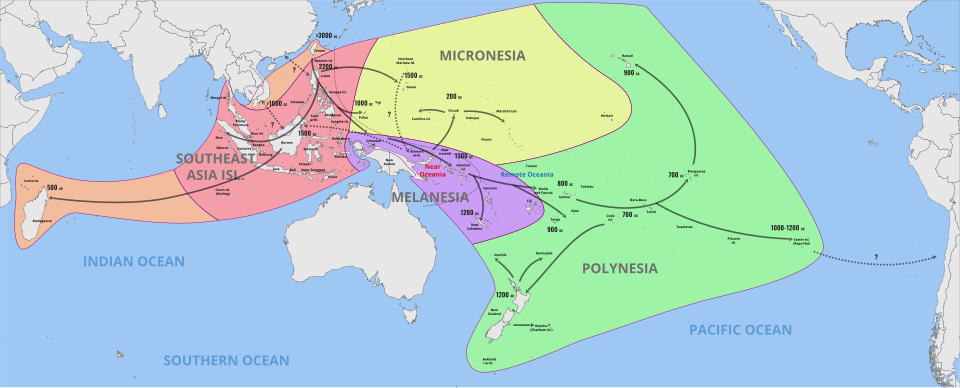
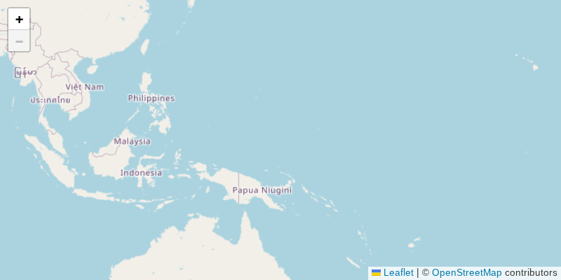
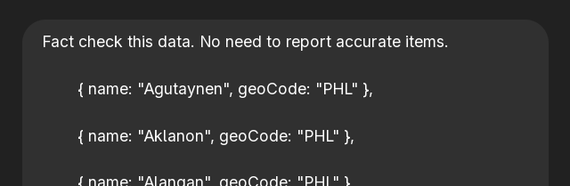
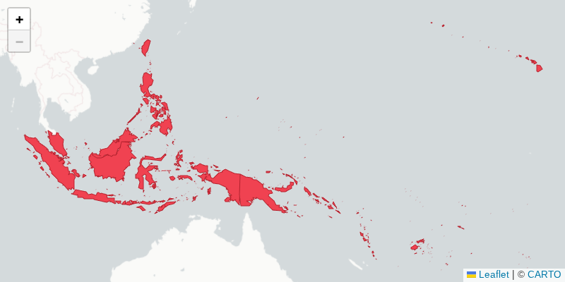
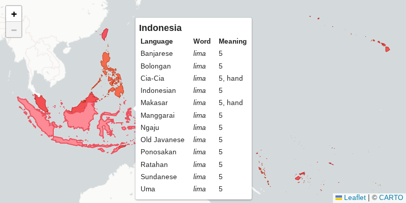

I made Lima Gang, a fun map-based visualizer, over a weekend using ‘vibecoding’.

Lima what?
lima means five in several languages particularly in island nations in Southeast Asia and the Pacific. These are part of the Austronesian language family that spans several seas from Madagascar to Indonesia, to Taiwan, to Hawaii.

Extent of Austronesian peoples. They must’ve been good with boats. Source: Wikimedia
The Lima Gang is a meme based on the fact that the word lima seemed to have survived intact, echoed in various tongues, and now somehow uniting people across vast oceans.
This is more than a meme, Unicode even gave recognition to the Lima Gang by including its gang sign as an official emoji: 🖐🏽
Jokes aside, I’m posting this to share a vibecoding experience.
Vibecoding
This small one-off app that I knew almost exactly how to make is a perfect case for some vibecoding practice. My initial thoughts were, it was going to be mostly boilerplate HTML code, some standard map UI code, and some standard visualization code. There are hundreds of map visualization web pages just like this, nothing too novel here. I think I used ChatGPT to generate about 80-90% of the code.
First, I had it generate the basic UI. It gave me a basic Leaflet-based map.

Basic Leaflet map.
It’s good to start with the basics. From my brief experience, it’s better to implement small chunks at a time than bigger integrated pieces.
I didn’t like the look of OpenStreetMap, and I know Carto has some nice-looking maps, so I asked ChatGPT to switch to Carto.
I remember having to manually tweak the tile layer API URL to get the specific style that I wanted: {s}.basemaps.cartocdn.com/light_nolabels/{z}/{x}/{y}{r}.png. This was the first time I looked into any documentation for the components that I was using.
Skipping the friction of going through documentation to get started with an API or a library was great for building up momentum at the start of a project, and I think LLMs are good with that initial scaffolding, but looking up documentaton is still necessary at some point.
Getting the data
The main source of data is this Wiktionary entry on ‘lima’.
I asked ChatGPT to create a script that scrapes this page. It should look for all entries where ‘lima’ means ‘five’, and list the corresponding languages in JSON format. A couple of iterations later, it gave me a Python script that uses the Wiktionary REST API.
# ...
url = "https://en.wiktionary.org/api/rest_v1/page/definition/lima"
response = requests.get(url)
data = response.json()
language_map = {}
for section, entries in data.items():
for entry in entries:
language = entry["language"]
entry_definition_htmls = entry.get("definitions", [])
entry_definitions = {extract_definition(d.get("definition", "")) for d in entry_definition_htmls}
entry_definitions.discard(None)
if language not in language_map:
language_map[language] = {"name": language, "definitions": set()}
language_map[language]["definitions"].update(entry_definitions)
# ...Again, not having to look these APIs up was a great effort-saver. And I don’t usually code in Python, so it would’ve taken some to review sets and list comprehensions otherwise.
I did have to go into the REST API and the Python code because of increasingly complex requirements, like getting secondary meanings, and massaging the data. ChatGPT wasn’t really able to dive in and iterate on these more complex requirements.
In the end I got this JSON file, the list of languages where ‘lima’ means 5:
[
{ "name": "Agutaynen" },
{ "name": "Bariai" },
{ "name": "Cia-Cia",
"otherMeanings": ["hand"] },
{ "name": "Dibabawon Manobo" },
{ "name": "East Futuna" },
{ "name": "Gela" },
{ "name": "Hiligaynon",
"otherMeanings": ["hand", "handle", "lime"] },
// ...
]I still needed to map this data geographically, so I asked ChatGPT to assign geographic IDs for the purpose of rendering these on the map. It’s basically a fill-in-the-blank exercise for ChatGPT. I think even spreadsheet apps have this kind of AI autocomplete now.
| Language
| Geo code
|
| Agutaynen
| PHL [Philippines]
|
| Bariai
| PNG [Papua New Guinea]
|
| Cia-Cia
| IDN [Indonesia]
|
| Dibabawon Manobo
| ?
|
| East Futuna
|
|
| Gela
|
|
| Hiligaynon
|
|
This is where I leaned a bit into the vibecoding vibes, because I have no scalable way to verify this data. I can verify code and logic, but I’m no linguist. I relied on ChatGPT’s knowledge and/or search capabilities to map the languages to where they are spoken.
To instill some confidence, I created a new thread and asked it to ‘fact-check’ the data it generated in a previous instance.

Of course, it proceeded to ignore my second instruction in its very first bullet point, but it actually gave me a good number of issues to double-check. The Lusi issue was hallucinated, but the rest seemed reasonable.
![Incorrect or questionable entries:
Brunei Malay — GeoCode should be 'BRN' (correct).
Lusi — No known language 'Lusi' in PNG; likely incorrect or misspelled.
Muduapa — No known language by this name in Indonesia.
Papora — Extinct Taiwanese language, but rarely used; valid but obscure.
Old Javanese — Historical language, not currently spoken; 'IDN' is reasonable.
Hawaiian — GeoCode 'HI' is U.S. state code, not ISO 3166-1 alpha-3. Should be 'USA'.
Tokelauan — GeoCode 'TKL' is not ISO 3166-1 alpha-3 (correct ISO code is 'TKL' for Tokelau but it's an exception; often 'TKL' is not officially ISO-3).](fact-check-answer.png)
The Hawaiian and Tokelauan cases were actually good points to raise, and I had to add special handling for those later.
I think a safer way to go about it is to use the LLM to map the language name to language code, then use a database to lookup country codes from language codes.
This way the LLM would just be doing a syntactic transformation, which it should be good at, leaving the accuracy-sensitive job of identifying the appropriate country to a deterministic database lookup.
Maybe there’d be no need for an LLM at all if I got the language code from the initial Wiktionary scrape in the first place. 🤔
I also asked ChatGPT to fetch GeoJSON data needed to render these geographic areas on the map. It hallucinated some GeoJSON datasets like raw.githubusercontent.com/david/world/b1b8704/data/country.geojson. In the end, I had to search for some of the GeoJSON data myself.

Map with GeoJSON layer highlighting the identified areas.
There were a few special cases regarding geographic areas as hinted at earlier. These are the state of Hawaii and some territories of New Zealand. These aren’t countries themselves, and it didn’t make sense to highlight the whole USA to represent the Hawaiian language, or all of New Zealand for the Tokelauan language.
ChatGPT didn’t like that I was using both countries and states and territories in the same dataset. I had to implement these special cases mostly manually, only giving really small isolated instructions to ChatGPT.
Interactivity
I asked it to generate popups on hover per geographic area to show the data in more detail. It added code using Leaflet tooltips. Another cool API I didn’t know beforehand. Overall pretty straightforward.

Map tooltips on hover.
That’s most of it. I did the CSS polishing bits and mobile responsiveness. I don’t feel like ChatGPT would have an eye for this as a language model. Maybe it’s multimodal now, but I still don’t trust it for visual things.
In the end, what happened wasn’t technically pure vibecoding as in the original definition. It started out that way, but I saw some pretty wrong code and and took the wheel at some point. Unfortunately I don’t possess the blissful gift of ignorance.
Opinions
From this experience, I can say that ChatGPT (or LLMs in general?) can get you started on tiny apps really quickly. That initial phase of writing boilerplate, finding the right libraries, and setting it all up can be automated away. But, it’s still not quite reliable enough to go bigger or deeper without proper direction. I don’t think this is a groundbreaking observation, many others have noted similar strengths and weaknesses of LLMs for coding.
To be fair, I didn’t use Cursor or any kind of coding agent. I have some experience with Cursor at work, and while it is significanly more capable than the general chat interface, still I doubt it could create the whole app in a single ask. It likely would require the same directed iteration in chunks as with a general chat interface, just maybe faster and in slightly bigger chunks.
I think for successful AI-assisted coding, you must have some kind of an implementation plan in mind, a breakdown of components and subcomponents to implement and integrate (just like in real life). In my case, I didn’t really have an explicit plan, but I had a sense of which bite-sized chunks to implement and iterate on.
I’ve seen some practices where the agent generates that plan itself, and iterates on it in small chunks. Like making a todo list for itself then completing that. I think that would actually go further, and with less supervision. But you still have to review and know what it’s doing at any point so you can course-correct in case it goes off track, which happens often.
In conclusion: I guess you have to know what you’re doing.